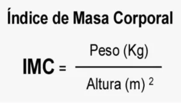

Estudio estadístico
El Índice de Masa Corporal (IMC) es una medida comúnmente utilizada para evaluar el peso corporal
de una persona en relación con su altura. Es una herramienta simple y rápida que proporciona una indicación
general del nivel de grasa corporal y ayuda a categorizar a las personas en diferentes rangos de peso.
La fórmula básica del IMC es:

Donde el peso se expresa en kilogramos y la altura en metros. Una vez calculado el IMC, se puede utilizar
para clasificar a las personas en diferentes categorías, que generalmente se dividen en:
Bajo peso: IMC menor a 18.5
Peso normal: IMC entre 18.5 y 24.9
Sobrepeso: IMC entre 25 y 29.9
Obesidad: IMC de 30 o más
Es importante tener en cuenta que el IMC tiene limitaciones, ya que no distingue entre la masa muscular
y la grasa corporal, y no considera la distribución de la grasa en el cuerpo. Por lo tanto, aunque es una
herramienta útil para evaluar el peso a nivel poblacional, no siempre refleja de manera precisa la salud
individual. Otros métodos, como la medición de la circunferencia de la cintura o evaluaciones más detalladas
de la composición corporal, pueden ser necesarios para obtener una imagen más completa.